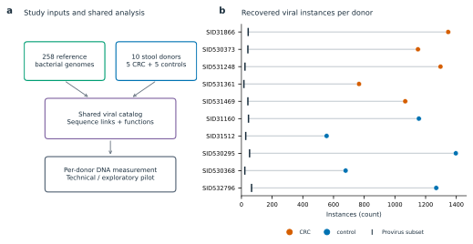
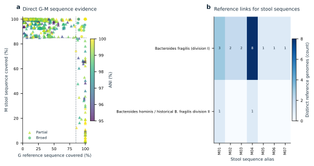
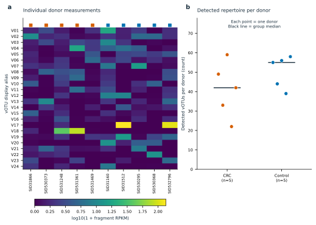
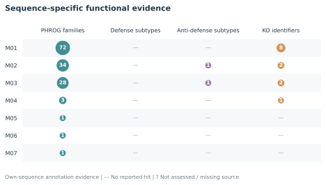
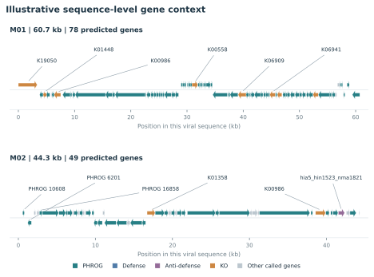

FIGURE 01
研究输入与逐人发现概览

圆点是每人组装得到的原始病毒实例数，竖线是其中预测provirus位点数。两者不是两个独立集合；原始病毒实例不能全部称为prophage。数量受测序深度和组装能力影响，不能直接解释为疾病差异。
展示选择：All fixed donors; zeros retained.
SVG · PDF · PNG
FIGURE 02
两端的序列交集与参考菌株连接

左图包含通过既定初筛的直接G–M序列对，可能有重叠点；不是所有未匹配对的分布。右图按参考分类单元和患者病毒序列展示连接，每格按不同参考genome去重计数，不将展开的多对多对应行当独立证据。这里的菌名表示参考端来源，不能证明患者体内宿主。
展示选择：Up to16 broad-matched M sequences, sorted by pooled distinct-donor count, then length, then ID. No ranking by CRC effect.
SVG · PDF · PNG
FIGURE 03
逐人的病毒谱与检出情况

热图展示按全体供者合并检出人数、合并平均丰度及编号排序的前24个vOTU，未按CRC差异挑选。灰色是未评估，低丰度与零值使用同一连续色阶。右图每个点是一名供者，短横线是中位数；展示全部目录中的检出数量。检出计数受测序和宿主背景影响，图中没有显著性检验或因果含义。
展示选择：Up to24 pooled-detection-ranked vOTUs; all donors retained. Full unfiltered tables preserved.
SVG · PDF · PNG
FIGURE 04
Sequence-specific functional evidence

每行是一条宏基因组来源病毒序列；圆点面积随该序列上不同功能标签数增加，数字给出实际数值。PHROG仅计accepted=true且is_best=true的同源家族；防御和反防御计不同系统亚型，KO计不同KO编号，四列的统计单位并不相同。“—”表示没有报告该类命中，“?”表示未评估或来源表缺失；均不能解释为生物学缺失。这些是序列自身的计算证据，KO不是已确认AMG，系统命中不是机制验证。不从相似参考序列转移注释，不进行组间功能显著性检验。
展示选择：At most 16 broad-matched M sequences selected by pooled donor count, then length and ID; no CRC contrast ranking.
SVG · PDF · PNG
FIGURE 05
Illustrative sequence-level gene context

展示最多两条广泛匹配宏基因组病毒序列的自身基因坐标和方向；在先前按全体供者出现次数筛选的序列中按长度、编号排序选取，不按CRC与对照差异挑选。每个箭头是该序列实际预测的一个基因。颜色仅表示该基因自身的同源命中或系统成员证据，每条轨道最多标注六个基因；未着色不等于没有功能。同一基因可能有多类证据，所有类别保存在对应source-data表；颜色优先级为反防御、防御、KO、PHROG，仅用于显示。仅从系统表提供的实际gene ID连接系统成员。这些是未经过人工机制审查的展示实例，不是已确认实验候选；图中没有同源基因连线、序列共线性或宿主侧翼，不据此认定AMG、prophage整合或患者体内宿主。
展示选择：Among the pooled-occurrence display set, choose up to two sequences by descending length, then ID; require every coordinate to be valid.
SVG · PDF · PNG